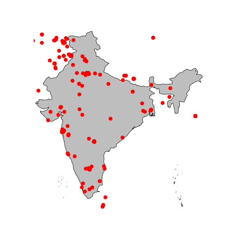
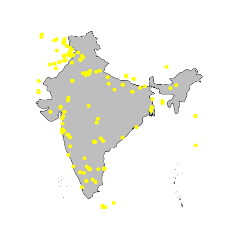
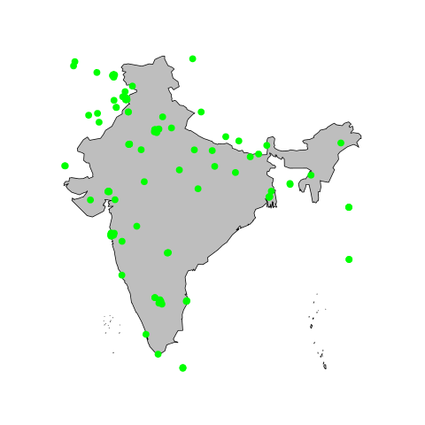
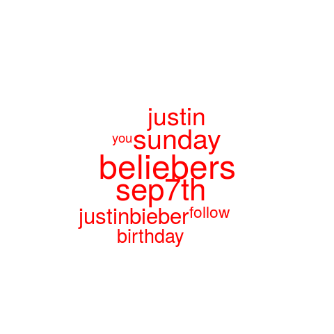
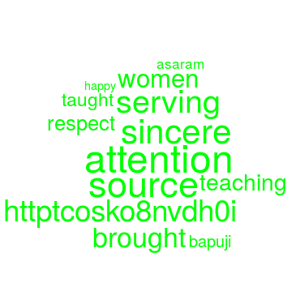

Spatio-Topical Modelling of Tweets from India
This project involves Topical categorisation of geolocated tweets from the Indian subcontinent, and then the subsequent correlation to their geographical distribution.
For the topical modelling, the R package "topicmodels" and "tm" are utilised. Geo referencing is done using the "maps" and "mapdata" packages.
For the topical modelling, unsupervised learning algorithm "Latent Dirichlet Allocation". The main aim of this project is to establish how information dissemination takes place in Twitter, with regard to the Indian subcontinent.
the table below shows an excerpt from the project, the first row indicates the spatial distribution of tweets belonging to a topic, whereas the second row is a wordcloud of the words used by LDA to generate topics.
| TOPIC 1 | TOPIC 2 | TOPIC 3 |
|---|---|---|
|  |  |  |
|  |  |